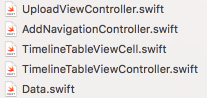
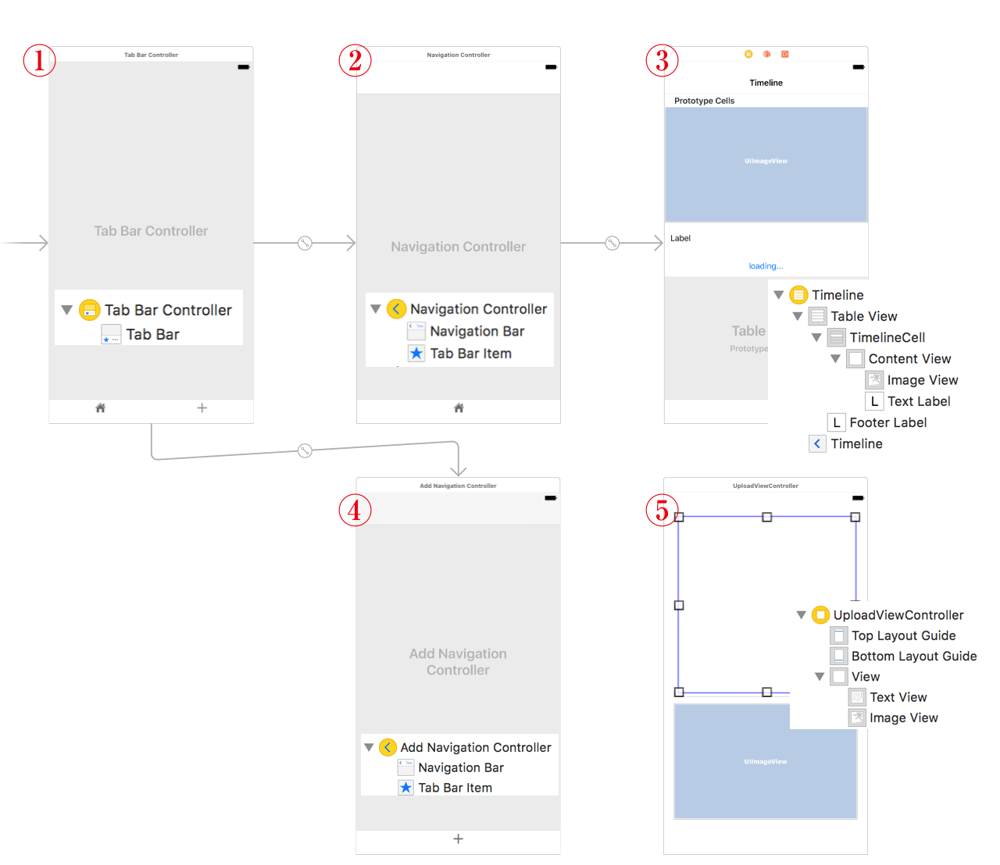
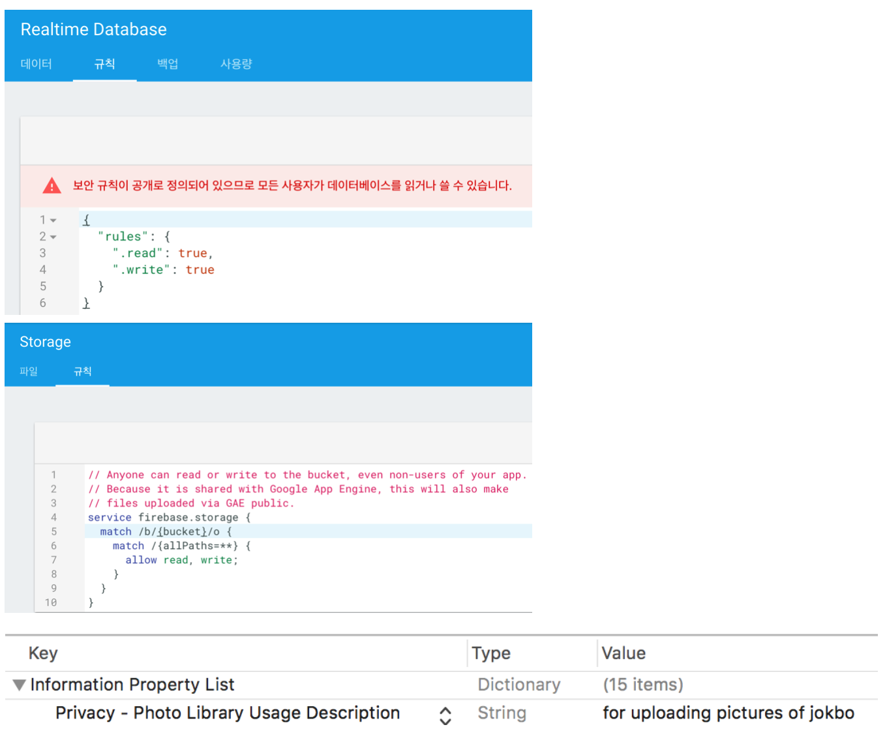
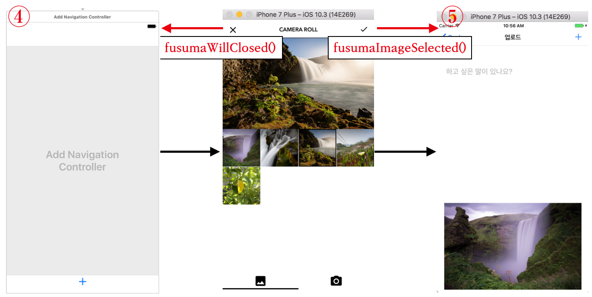
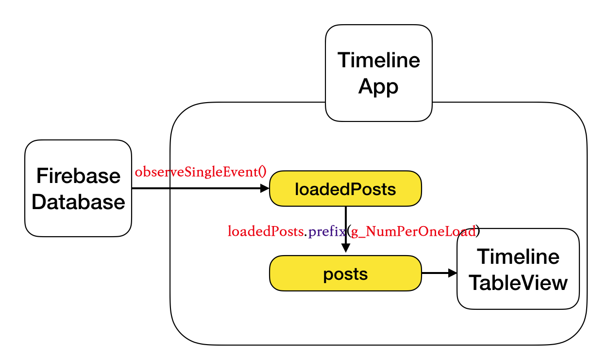

<!DOCTYPE html>
<html lang="en">

<head>
  <meta charset="utf-8">
  <meta http-equiv="X-UA-Compatible" content="IE=edge">
  <meta name="viewport" content="width=device-width, initial-scale=1">
  <meta name="description" content="">
  <meta name="author" content="">
  <link rel="shortcut icon" href="../../assets/ico/favicon.ico">

  <title>Firebase를 이용하여 Timeline만들기</title>

  <!-- Bootstrap core CSS -->
  <link href="../../assets/css/bootstrap.css" rel="stylesheet">

  <!-- Custom styles for this template -->
  <link href="../../assets/css/style.css" rel="stylesheet">
  <link href="../../assets/css/font-awesome.min.css" rel="stylesheet">

  <!-- gist-embed  by Byoungwook Park-->
  <script type="text/javascript" src="https://ajax.googleapis.com/ajax/libs/jquery/1.9.1/jquery.min.js"></script>
  <script type="text/javascript" src="https://cdnjs.cloudflare.com/ajax/libs/gist-embed/2.4/gist-embed.min.js"></script>
  <style media="screen">
    body .code_by_line {
      line-height: 150%;
    }

  </style>
  <!--  -->


  <!-- Just for debugging purposes. Don't actually copy this line! -->
  <!--[if lt IE 9]><script src="../../assets/js/ie8-responsive-file-warning.js"></script><![endif]-->

  <!-- HTML5 shim and Respond.js IE8 support of HTML5 elements and media queries -->
  <!--[if lt IE 9]>
      <script src="https://oss.maxcdn.com/libs/html5shiv/3.7.0/html5shiv.js"></script>
      <script src="https://oss.maxcdn.com/libs/respond.js/1.4.2/respond.min.js"></script>
    <![endif]-->

  <script src="../../assets/js/modernizr.js"></script>
</head>

<body>

  <!-- Fixed navbar -->
  <div class="navbar navbar-default navbar-fixed-top" role="navigation">
    <div class="container">
      <div class="navbar-header">
        <button type="button" class="navbar-toggle" data-toggle="collapse" data-target=".navbar-collapse">
            <span class="sr-only">Toggle navigation</span>
            <span class="icon-bar"></span>
            <span class="icon-bar"></span>
            <span class="icon-bar"></span>
          </button>
        <a class="navbar-brand abc" href="index.html">
        </div>
        <div class="navbar-collapse collapse navbar-right">
          <ul class="nav navbar-nav">
            <li><a href="../../index.html" style="font-size: inherit;">홈</a></li>
        <li><a style="font-size: inherit;" href="../../about.html">소개</a></li>
        <li><a style="font-size: inherit;" href="mailto:codershigh@lingostar.co.kr?subject=CodersHigh%20웹사이트를%20통해%20연락드립니다">문의</a></li>
        <li class="active"><a style="font-size: inherit;" href="../../techblog_list.html">기술블로그</a></li>
        </ul>
      </div>
      <!--/.nav-collapse -->
    </div>
  </div>

  <!-- *****************************************************************************************************************
	 BLUE WRAP
	 ***************************************************************************************************************** -->
  <div id="blue">
    <div class="container">
      <div class="row">
        <h3>코더스하이 기술블로그</h3>
      </div>
      <!-- /row -->
    </div>
    <!-- /container -->
  </div>
  <!-- /blue -->


  <!-- *****************************************************************************************************************
	 BLOG CONTENT
	 ***************************************************************************************************************** -->

  <div class="container mtb">
    <div class="row">
      <!-- SINGLE POST -->
      <div class="col-lg-12">
        <p align="center">
          <csmall>이 글의 저작권은 글쓴이에게 있으며, 배포는 코더스하이가 합니다.</csmall>
        </p>

        <!--<p></p>-->
        <h3 class="ctitle">Firebase를 이용하여 Timeline만들기</h3>
        <p>
          <csmall>Posted: Agust 16, 2017.</csmall> |
          <csmall2>By: Byoungwook Park</csmall2>
        </p>

        <!-- POST 시작  -->
        <p><b>Firebase</b>를 이용하여, Instagram과 같이 텍스트와, 이미지를 게시하고, 이를 표시해주는 Timeline앱을
          만들어 보겠습니다.</br>
          Firebase 설치 및, 기본 API에 대한 설명은 <a href="TODO">Firebase를 이용하여 채팅창 만들기</a>에
          있으니, 이 글을 참조하길 바랍니다.
        </p>


        <div style="height:60px"></div>

        <h3>주요 기능</h3>
        <p>먼저 Instagram과 완전히 동일한 기능을 구현하기엔 어려움이 있으니, 구현할 기능을 한정하겠습니다.</br>
          모든 유저들은 하나의 타임라인을 공유하고, 유저들은 이 타임라인에 게시글을 올리게 됩니다. 구현해야 할 기능들은 다음과 같습니다.
          <ul>
            <li>사용자는 먼저 이미지를 선택하고 텍스트를 작성합니다. 사용자가 이미지를 선택하도록 하기 위해 여기선 Fusuma 라이브러리를
              이용합니다.
            </li>
            <li>타임라인은 Tableview를 이용하며, 앱 실행 시 게시글은 정해진 갯수만 표시 합니다. 이전, 최신게시글들은 사용자가 스크롤을
              이용하여 불러옵니다. </li>
            <li>최신게시글들은 스크롤을 맨 위로 올릴 시 불러오고, 이전게시글들은 스크롤을 맨 아래로 내릴 시 불러옵니다.</li>
          </ul>
          즉 이번 포스트에선 <b>게시글을 Firebase에서 불러오는 것은 앱 실행 중에 실시간으로 동작하는 것이 아니라, 사용자의 스크롤에 실행되도록</b>          할 것입니다. 자동 동기화는 <a href="https://firebase.google.com/docs/database/ios/retrieve-data?hl=ko#read_data_once">iOS에서 데이터 검색</a>을
          참조하길 바라며, 이 포스트에서 구현하지 않습니다.
        </p>

        <div style="height:60px"></div>

        <h3>시작하기</h3>
        <blockquote>

          <p>새 프로젝트를 만들고 Timeline이라고 지칭합니다. 다음과 같이 Data.swift는 일반 swift파일로, 나머지는 Cocoa
            Touch Class로 파일을 추가합니다. </p>
          <br><br>
          <p>Main.stoyboard는 아래와 같이 설정합니다. </p>
          <br><br>
          <p>각각의 오브젝트들은 다음과 같이 설정합니다.
            <ol>
              <li><b>Tab Bar Controller</b>
                <p> Tab Bar의 Attribute-image Tint는 Black으로 설정합니다. 현재 선택된 탭아이콘의 색을 나타냅니다.</p>
              </li>
              <li><b>Navigation Controller</b>
                <p> Navigation Bar의 Attribute-Translucent를 체크해제 합니다. 배경과 무관한 색을 가지게 합니다.</br>
                  Tab Bar Item의 Attribute-selected image, Attribute-Image를 집모양으로 설정합니다.</p>
              </li>
              <li><b>TimelineTableViewController</b>
                <p> Identity-Custom class를 TimelineTableViewController로 지정합니다.</br>
                  Table View의 Attribute-content는 Dynamic Prototypes로 지정합니다.</br>
                  TimelineCell의 Identity-Custom class를 TimelineTableViewCell로, Attribute-Identifier는
                  TimelineCell로 지정합니다.</br>
                  <csmall>[Outlet] Image View와 Text Label은 TimelineTableViewCell로, Footer
                    Label은 TimelineTableViewController로 연결합니다.</csamll>
                    </br>
                </p>
              </li>
              <li><b>Add Navigation Controller</b>
                <p> 2번과 같습니다. 하지만 아이콘은 '+'모양으로 설정합니다.</br>
                  Identity-Custom class를 AddNavigationController로 지정합니다.</p>
              </li>
              <li><b>UploadViewController</b>
                <p>
                  Identity-Custom class를 UploadViewController로 지정해 주고, TextView와 ImageView를 추가합니다.</br>
                  또한 코드로 4번과 5번을 연결하기 위해 Identity-Storyboard ID를 UploadViewController로 지정해 줍니다.</br>
                  <csmall>[Outlet] Image View와 Text View는 UploadViewController로 연결합니다.</csamll>
                </p>
              </li>
            </ol>
          </p><br><br>


          <h4>Podfile 설정</h4>
          <p>이미지를 저장 하기위해 Firebase/Storage, 저장한 이미지를 표시하기 위해 FirebaseUI/Storage, 텍스트를
            업로드 하기위해 Firebase/Database, 사용자가 이미지를 선택하도록 하기위해 Fusuma를 이용하도록 하겠습니다.2번째
            줄 platform은 버전에 알맞게 설정합니다. Podfile을 다음과 같이 설정한 후 'pod install'을 실행합니다.
          </p>
          </br>
          </br>

          <h4>Database, Storage 규칙, info.plist 설정</h4>
          <p>앱에서 Database, Storage에 접근하기 위해서 임시로 규칙을 공개하도록 합니다. (
            <a href="https://firebase.google.com/docs/database/security/quickstart?hl=ko">Database규칙</a>
            <a href="https://firebase.google.com/docs/storage/security/start?hl=ko">Storage규칙</a>)
            </br>
            또한 앱이 사진 라이브러리 접근하기 위해선 그 목적을 알려주어야 합니다. 따라서 프로젝트 내부 'info.plist'에는 다음과 같은 값을 추가해줍니다.</p>
          </br>
          </br>


          <div style="height:60px"></div>

          <h4>게시글 데이터</h4>
          <p><b>Data.swift</b>파일에 게시글 데이터를 구조화합니다.</br>
            사용자가 입력한 메세지를 담을 text, 게시한 상대적 시간을 나타내는 date, 게시글 이미지를 담을 imageView프로퍼티가 있습니다.</br>
          </p>
          <p>여기서 date는 Int타입입니다. 이는 Date.timeIntervalSince1970를 이용하여 1970년 이후의 시간을 숫자로
            얻어오기 때문입니다. 비교가 쉽도록 하기 위함이므로 여기선 이를 기준으로 진행하겠습니다.</br>
            생성자는 매개변수 마다 앞에 '_'를 붙여 인자이름을 생략할 수 있도록 했습니다.</p>
          <code data-gist-id="f5f6662e4a9e729d6a26e9354ecadc22" data-gist-hide-footer="true"></code>
        </blockquote>

        <div style="height:60px"></div>
        <h3>Fusuma와 Firebase를 이용한 데이터 저장 및 파일 업로드</h3>
        <blockquote>
          <p>먼저 이미지를 업로드하기 위한 디자인을 살펴보겠습니다. Fusuma는 독자적인 버튼을 가지고 있기 때문에, 이를 NavigationBarButtonItem으로
            사용하기 위해선 코드로 구현해야합니다.</br>
          </p>
          <p>버튼에 대한 액션은 FusumaDelegate를 위임받고 fusumaWillClosed(), fusumaImageSelected()
            메소드를 이용하여 구현합니다. <b>Close버튼을 누르면 탭을 바꾸어 2번 컨트롤러로 돌아가게하고, Select버튼을 누르면 5번 컨트롤러로 가게해야합니다.</b></p>
          <br><br>
          <p>4번 <b>AddNavigationController.swift</b>부터 보겠습니다. <b>AddNavigationCotroller는
            fusuma, uploadController프로퍼티를 가지며, 이를 상황에 따라 네비게이션 스택에 푸쉬, 팝을 합니다.</b></p>
          <p class="code_by_line"><i>18~29</i> : fusuma에 대한 설정을 합니다.</p>
          <p class="code_by_line"><i>31~32</i> : 5번 컨트롤러는 Main.storyboard로부터 코드로 불러오겠습니다.</p>
          <p class="code_by_line"><i>29, 36~39</i> : fusuma컨트롤러는 위아래에 독자적인 버튼이 있기 때문에, 네비게이션바와 바텀바는 숨겨줍니다.
            그리고 AddNavigationController가 최초 표시될 때 fusuma가 표시되도록 설정합니다.</p>
          <p class="code_by_line"><i>43~49</i> : fusuma에서 체크버튼을 누르면 uploadController에 이미지를 넘겨주고 uploadController를
            푸쉬합니다. close버튼을 누르면 2번 컨트롤러로 이동합니다.</p>
          <code data-gist-id="d1923be4cdf48e7ca6ddc77279639401" data-gist-hide-footer="true"
            data-gist-line="9-49"></code></br><br>

          <h4>업로드 뷰 컨트롤러</h4>
          <p>다음으로 5번 <b>UploadViewController</b>를 보겠습니다. TextView PlaceHolder에 대한 설명은
            여기서 다루지 않고, Firebase Database, Firebase Storage에 게시글을 업로드 하는 과정을 살펴보겠습니다.</br>
            프로퍼티들은 다음과 같이 설정합니다.</br>
          </p>
          <p class="code_by_line"><i>34~35</i> : 여기서 UploadViewController의 네비게이션 바버튼아이템을 추가하고, <i>34줄</i>에서
            버튼에 대한 액션으로 uploadPost()메소드를 지정해 줍니다.</br>
            <csmall><a href="https://firebase.google.com/docs/reference/ios/naming-migration-guide">참고로 swift Firebase 4.0.0버전부터 naming convention이 바뀌었습니다.</a></csmall>
          </p>

          <code data-gist-id="e963729ff7632c3b29da5d54dc4c2bec" data-gist-hide-footer="true"
            data-gist-line="9-27"></code>
          <code data-gist-id="e963729ff7632c3b29da5d54dc4c2bec" data-gist-hide-footer="true"
            data-gist-line="34-35"></code></br><br>

          <p class="code_by_line"><i>69~75</i> : 앞서 fusuma에서 숨겼던 네비게이션바를 표시하고, 넘겨준 이미지를 표시합니다. 뷰가 사라질때 네비게이션
            바를 숨기도록하여, BackButton이 눌리면 다시 네비게이션바를 숨겨줍니다.</p>
          <p class="code_by_line"><i>76~105</i> : <b>uploadPost()메소드</b>를 이용하여 데이터를 저장하고 파일을 업로드합니다. text,
            date는 Database에 저장하고 image는 Storage에 업로드합니다. 텍스트 저장은 placeHolder의 유무에
            따라 달리하고<i>(77~85)</i>, date는 1970년 이후의 시간을 Int로 받아옵니다<i>(87~89)</i>.</br>
            <b>이미지는 storageRef.child([filename])메소드를
            이용하여 루트안에 저장할 filename을 지정합니다<i>(91)</i>. 이미지를 JPEG형식으로 바꾸어 주고, imageRef.putData()메소드를
            이용하여 파일을 업로드합니다<i>(93~102)</i></b>.
          </p>
          <code data-gist-id="e963729ff7632c3b29da5d54dc4c2bec" data-gist-hide-footer="true"
            data-gist-line="68-106"></code></br><br>

        </blockquote>

        <div style="height:60px"></div>
        <h3>타임라인 테이블 뷰 컨트롤러</h3>
        <blockquote>
          <p>이제 게시글을 표시하기 위해 <b>TimelineTableViewController.swift</b>를 작성하겠습니다.</br>
            먼저 필요한 라이브러리를 모두 import하고, 프로퍼티들을 선언 합니다. 프로퍼티들의 용도는 주석과 같습니다.</br>
            <p>posts와 loadedPosts를 이해하기 위해선, 이 앱이 데이터들을 가져오는 방식을 이해해야 합니다. 이는 추후에 loadPosts()메소드와
              함께 설명하도록 하겠습니다.</br>
              <p>최신글을 불러 들이기 위해선 기본적으로 UITableViewController에 있는 프로퍼티인 <b>refreshControl</b>을
                이용합니다. 사용하기 위한 양식은 다음과 같습니다. refreshControl은 테이블뷰 스크롤을 맨 위로 올리면 나타나며
                이에 대한 액션은 직접 구현해야 합니다. <i>33줄</i> addTarget()메소드 안 action 매개변수에 지정된
                메소드를 넘겨주어 구현합니다.</br>
              </p>
            </p>

            <code data-gist-id="196f327528322762177eb2e627c4f182" data-gist-hide-footer="true"
              data-gist-line="9-34"></code></br>
            </br>

            <h4>테이블 뷰 Section, Row, Cell 설정</h4>
            <p> Section의 갯수는 하나로 하고, Row는 posts의 수만큼 지정합니다.</br>
              cell은 TimelineTableViewCell로 캐스팅하여 얻어오고, row에 해당하는 포스트에서 프로퍼티를 읽어와 알맞은 cell의 프로퍼티에
              할당합니다.
              </br>
              <b>TimelineTableViewCell</b>안에는 <b>시작하기</b> 3번파트에서 Outlet을 연결해 주었던
              Image View와 Text Label 프로퍼티가 들어있습니다.</p>
            <code data-gist-id="196f327528322762177eb2e627c4f182" data-gist-hide-footer="true"
              data-gist-line="39-55"></code></br>
            </br>

            <h4>데이터 검색 및 파일 다운로드 - loadPosts()메소드</h4>
            <p>이제 본격적으로 Firebase로 부터 저장된 포스트들을 읽어 오겠습니다. 그 전에 앞에서 넘어갔던 loadPosts와 posts의
              관계에 대해서 설명하겠습니다.</br>
              처음 앱이 실행 되면 Timeline App은 Firebase에 있는 모든 Posts들을 <b>observeSingleEvent()</b>메소드로
              읽어 옵니다. observe()메소드를 이용하면 자동 동기화가 가능하지만 이 포스트에선 구현하지 않습니다.</br>
              읽어온 Posts들은 loadedPosts프로퍼티에 저장되며, 이 중 가장 최근 게시글을 <b>g_NumPerOneLoad</b>개수만큼만
              posts프로퍼티에 저장합니다. TimelineTableViewController는 이 posts의 정보를 읽어옵니다.</p>
            </br>
            </br>

            <p>코드를 줄번호에 맞춰 설명하겠습니다.</br>
            </p>
            <p class="code_by_line"><i>59~60</i> : posts들을 date순으로 정렬하는 쿼리를 만듭니다. Firebase Database에 <b>'나는 이런 데이터를 원해'</b>를
              알려주는 질문입니다.</p>
            <p class="code_by_line"><i>62~65</i> : 만들어 놓은 쿼리를 통해 데이터를 가져옵니다. Firebase의 데이터들은 snapshot타입으로
              얻을 수 있으며, snapshot은 기본적으로 key, value, child들을 갖습니다. <b>
                여기선 snapshot은 모든 posts들을 담고 있으며, 이를 배열로 바꾸기 위해 <i>64번째 줄</i>을
              실행 합니다. 배열로 바꾸지 않고 딕셔너리로 받게되면 posts들의 정렬된 순서가 망가지게 됩니다.</b> queryOrdered()
              쿼리를 통해 얻은 데이터들은 오름차순이기 때문에 reversed()를 이용하여 내림차순으로 바꾸어 줍니다.</p>
            <p class="code_by_line"><i>67~73</i> : snapshotData 배열 안에 있는 각각의 anyDatum들은 Any타입이므로 이를 DataSnapshot타입으로
              다시 바꾸어 줍니다.
              <b>이제 for문이 처음 실행 되는 snapshotDatum안에는 가장 최근 게시글이 들어있습니다.</b> snapshotDatum.key안에는
              AutoId가, snapshotDatum.value안에는 text, date를 키로 갖는 딕셔너리 데이터들이 들어있습니다.
              이 데이터로 부터 Post를 생성해줍니다. 참고로 for문안에서 생성된 post 인스턴스가 사라지지 않으려면 class타입이어야만
              합니다.
            </p>
            <p class="code_by_line"><i>75~76</i> : 스토리지 레퍼런스로 부터 Image를 가져옵니다. FirebaseStorageUI를 import하면,
              UIImageView안에 sd_setImage()메소드가 생기게 되며, 이를 이용하여 구현 할 수 있습니다. 매개변수로 스토리지 레퍼런스와, 다운로드 중에 표시할 이미지를 표시합니다.
              <p class="code_by_line"><i>78~85</i> : loadedPost.prefix()메소드를 이용하여, 3개의 게시글만 posts에 추가하고,
                테이블뷰를 갱신합니다.
              </p>

              <code data-gist-id="196f327528322762177eb2e627c4f182" data-gist-hide-footer="true"
                data-gist-line="57-85"></code></br>
              </br>

              <h4>최신게시글 검색 refresh(), loadFreshPosts()메소드</h4>
              <p>앞서 <i>33줄</i>에서 refreshControl의 액션으로 refresh()메소드를 설정했습니다. 이제 테이블 뷰
                스크롤을 맨 위로 올리면 원형으로 도는 refresh 뷰가 표시되고, 이때의 동작을 refresh()메소드에서 구현합니다.
                refresh()메소드에서는 loadFreshPosts()메소드를 호출하여 새로운 게시글을 불러오게합니다.
              </p>
              <code data-gist-id="196f327528322762177eb2e627c4f182" data-gist-hide-footer="true"
                data-gist-line="33"></code>
              <code data-gist-id="196f327528322762177eb2e627c4f182" data-gist-hide-footer="true"
                data-gist-line="135-139"></code></br>
              <p>loadFreshPosts()메소드는 loadPosts()메소드와 거의 동일하니 다른 부분만 살펴보겠습니다.</br>
              </p>
              <p class="code_by_line"><i>88~93</i> : DatabaseQuery.queryStarting(atValue:) 메소드를 이용하여 현재 표시되고
                있는 posts프로퍼티중에서 가장 최근 Date보다 더 최근에 나온 게시글을 질문합니다. 단 Firebase Database에
                저장되는 값들은 전부 String타입 이므로 이를 String으로 캐스팅해줍니다.</p>
              <p class="code_by_line"><i>99, 112~122</i> : 새로 불러들인 최근 게시글들은 freshPostsChunk에 담아둡니다. 만약 이
                갯수가 g_NumPerOneLoad개 이상이면 for문을 빠져나와 더 이상 표시하지 않습니다. 이 freshPostsChunk를
                loadedPosts, posts 배열 맨 앞에 삽입합니다. </p>
              <code data-gist-id="196f327528322762177eb2e627c4f182" data-gist-hide-footer="true"
                data-gist-line="87-122"></code></br>
              </br>

              <h4>이전게시글 검색 scrollViewDidScroll(), loadPastPosts()메소드</h4>
              <p>Timelin앱은 스크롤을 맨 아래로 내리면 이전게시글을 불러옵니다. UITableViewController는 기본적으로
                UIScrollViewDelegate를 위임받습니다. 우리는 이 내부에 scrollViewDidScroll()메소드를
                이용하여 이전게시글 검색을 구현합니다. 다음과 같은 과정을 통해 스크롤이 contentSize를 넘어감을 체크하고,
                넘거가게 되면 이전게시글을 불러오도록 합니다. loadPastPosts()메소드를 호출하여 이전게시글을 불러옵니다.
              </p>
              <code data-gist-id="196f327528322762177eb2e627c4f182" data-gist-hide-footer="true"
                data-gist-line="141-150"></code></br>
              <p>loadPastPosts()메소드에서는 앱 실행시 불러왔던 이전게시글들을 g_NumPerOneLoad개 만큼 불러옵니다.
                로딩 중임을 보여주기 위해 대기시간 sleep(1)을 넣도록 합니다.
              </p>
              <code data-gist-id="196f327528322762177eb2e627c4f182" data-gist-hide-footer="true"
                data-gist-line="123-131"></code></br>
              </br>
        </blockquote>

        <div style="height:60px"></div>
        <h3>마치며</h3>
        <p>지금까지 파이어베이스를 이용하여 Instagram과 같은 Timeline을 만드는 방법을 배웠습니다. 이것을 기본으로 하여 다른 다양한 방식의 타임라인을 만들어보세요.</br>
           전체 소스는 <a href="https://github.com/PBW99/ex-Timeline">Github</a>에서 확인하실 수 있습니다. </p>

        <iframe width="560" height="315" src="https://www.youtube.com/embed/pPjNKiZfXlY" frameborder="0" allowfullscreen style="display:block; margin: 0 auto;"></iframe>


        <p align="center">
          <csmall>이 글의 저작권은 글쓴이에게 있으며, 배포는 코더스하이가 합니다.</csmall>
        </p>
        <div class="spacing"></div>

        <!--<h6>SHARE:</h6>
		 		<p class="share">
		 			<a href="#"><i class="fa fa-twitter"></i></a>
		 			<a href="#"><i class="fa fa-facebook"></i></a>
		 			<a href="#"><i class="fa fa-tumblr"></i></a>
		 			<a href="#"><i class="fa fa-google-plus"></i></a>
		 		</p>-->
      </div>
      <!-- /col-lg-12 -->
    </div>
    <!-- /row -->
  </div>
  <!-- /container -->


  <!-- *****************************************************************************************************************
 	 FOOTER
 	 ***************************************************************************************************************** -->
  <div id="footerwrap">
    <div class="container">
      <div class="row">
        <div class="col-lg-4">
          <h4>회사 소개</h4>
          <div class="hline-w"></div>
          <p>코더스하이는 iOS/macOS 교육 콘텐츠 제작 그룹입니다.</br>
            코더들이 짜릿한 즐거움을 느끼도록 하는 것이 우리의 목표입니다.</p>
        </div>
        <div class="col-lg-4">
          <h4>소셜 네트워크</h4>
          <div class="hline-w"></div>
          <p>
            <a href="https://www.facebook.com/codershighteam/"><i class="fa fa-facebook"></i></a>
            <a href="http://us3.campaign-archive1.com/home/?u=0823b2402b36f258c57c2d2d4&id=e066983150">
							
						</a>
          </p>
        </div>
        <div class="col-lg-4">
          <h4>회사 위치</h4>
          <div class="hline-w"></div>
          <p>
            경기도 수원시<br/> 영통구 광교로 156,<br/> 광교비즈니스센터 11층<br/>
          </p>
        </div>

      </div>
      <!--/row -->
    </div>
    <!--/container -->
  </div>
  <!--/footerwrap -->

  <!-- Bootstrap core JavaScript
    ================================================== -->
  <!-- Placed at the end of the document so the pages load faster -->
  <script src="https://ajax.googleapis.com/ajax/libs/jquery/1.11.0/jquery.min.js"></script>
  <script src="../../assets/js/bootstrap.min.js"></script>
  <script src="../../assets/js/retina-1.1.0.js"></script>
  <script src="../../assets/js/jquery.hoverdir.js"></script>
  <script src="../../assets/js/jquery.hoverex.min.js"></script>
  <script src="../../assets/js/jquery.prettyPhoto.js"></script>
  <script src="../../assets/js/jquery.isotope.min.js"></script>
  <script src="../../assets/js/custom.js"></script>


</body>

</html>
